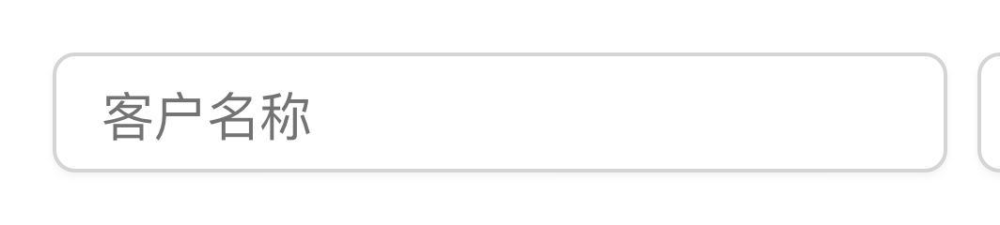
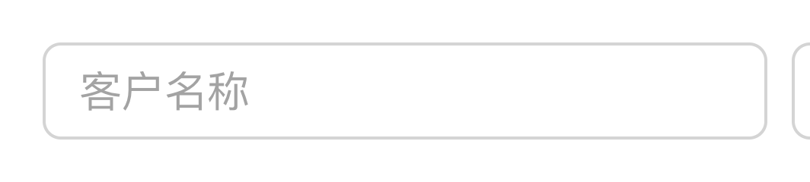

05
验证：如何检查一致性
自动检查说五个库全部一致。它怎么量、证明了什么，又有哪些量不到？
开头一道阴影
「全部一致」只代表已检查的项目一致
现在跑一遍完整检查，最后一行是：
自动检查：299 项，5 个组件库全部一致。
早先「127 项全部一致」时，下面这道阴影一直不一样：那时检查不量阴影。
看法
shadcn/ui向下 1 像素、模糊 2 像素、5% 的黑

Ant Design没有阴影

现在对齐档已经去掉了它，也量了。
早先：开发记录（2026-10-11，做开关时发现）；299：README.md 第 5 行，检查的最后一行照 audit/run.mjs 第 289 行的格式
01第一部分
检查方法
检查就是验收：五个库放在一起，一项一项去量。
5.1现场量一次
现场测量：五个组件库、四个部件、六项指标
照真检查的量法，量五个库的四个部件：宽、高、底色、边线、圆角、投影。
外观
五个组件库 控件样张 · 黑白真组件
…
试试：只设主题时开关「量投影」；对齐时关掉「按画出来的样子算」。
5.2
检查工具本身不依赖任何组件库
5.3
检查项目的构成
5.4
检查报告定位到区域与部件
5.5
全圆角的写法差异
5.6
五个组件库并排时超出窗口宽度
02
检查覆盖不到的地方
5.7
需要注意的三种情况
5.8
未检查的项目无法发现：阴影与复选框聚焦
5.9
两个参照一致，也可能同时出错
5.10
一行修改消除大量差异
5.11
检查证明一致，视觉效果需设计师确认
03
AI 与人的分工
5.12
AI 完成的工作以检查和实测为准
5.13
AI 与人各自负责的工作
第 05 集 · 完整视频
后面 12 节在课程里
这一篇后面的 12 节和第 05 集完整视频，在「给设计师的零基础 AI 课」里。
完整版文字版还有每段代码的逐行解释和四个附录（组件库档案、适配记录、取舍记录、常用提示词），可以下载到本地看。